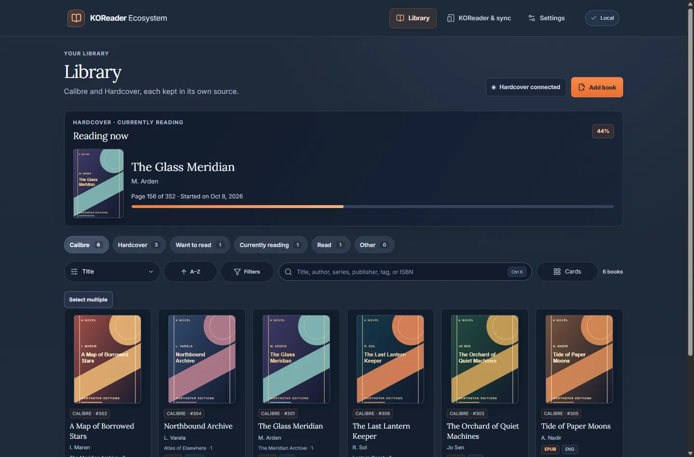

Calibre
Browse and edit supported metadata in your local library.
A Windows app that brings your Calibre library, Kindle and KOReader closer to your reading platforms.
Open source · Windows x64 · Early-stage project

Your books already have a home. This is how they travel.
Browse and edit supported metadata in your local library.
Send an ebook to Kindle over USB, with confirmation and a backup.
A separate KOReader plugin sends reading progress to Hardcover over Wi-Fi.
Review CSV imports from Goodreads, StoryGraph and Maratona. Export is compatible with Goodreads. Direct synchronization with those services is not available.
Search, filter and review your collection in one place. Your book files remain in your Calibre library.
GitHubIndividual Kindle transfers have been tested. The full KOReader–Hardcover flow, batch transfers and sidecar recovery still need real-device validation. The Windows installer is unsigned.
No account is needed to browse and organize a Calibre library. Hardcover features require an account.
Not directly. Reviewable CSV import is available for both services.
Your books remain in your Calibre library on your computer.
Yes. KOReader Ecosystem is open source under the MIT license.
Try the app, report what you find, or contribute code, documentation and accessibility improvements.